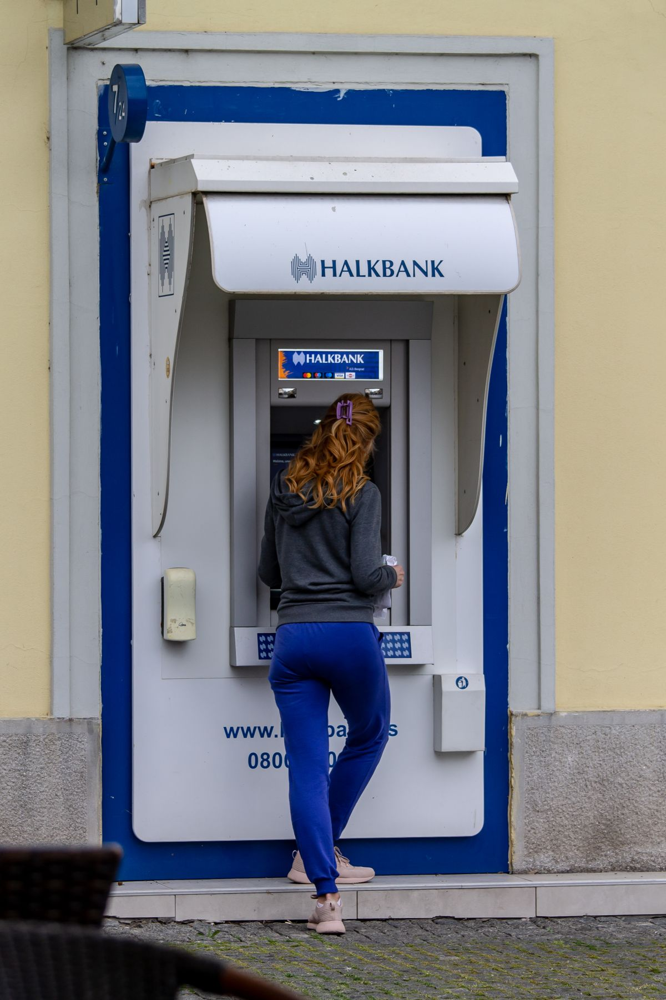

Kalau kamu nasabah MNC Bank dan bingung kenapa aplikasi MotionBank tidak bisa dipakai buat transfer, kemungkinan besar kamu tidak sendirian. Per November 2026 ini layanan transaksi digital MotionBank memang sedang mengalami gangguan dan masih dalam tahap pemulihan. Artikel ini merangkum apa yang sebenarnya terjadi, cara paling realistis buat menarik uang dan cek saldo selama gangguan, plus fakta di balik isu-isu yang beredar.
Apa yang Sebenarnya Terjadi dengan MotionBank
MotionBank adalah aplikasi mobile banking milik PT Bank MNC Internasional Tbk (kode saham BABP). Berdasarkan laporan media, keluhan nasabah soal gangguan mulai ramai di media sosial sejak akhir Oktober 2026, dan sampai Rabu 4 November 2026 layanan digitalnya masih dalam proses pemulihan.
Ini yang dikeluhkan para nasabah, sesuai laporan berita:
- Transfer keluar lewat aplikasi MotionBank gagal terus.
- Pembayaran pakai QRIS tidak bisa dipakai.
- Pengisian saldo dompet digital juga gagal.
- Tarik tunai di ATM sempat menampilkan keterangan maintenance bagi sebagian nasabah.
- Tarik tunai lewat teller di kantor cabang dilaporkan dibatasi, ada nasabah yang mengaku cuma bisa menarik maksimal Rp2 juta.
Corporate Secretary MNC Bank, Edward Kennetze, mengonfirmasi gangguan ini pada Senin 2 November 2026. Ia mengatakan pihaknya terus melakukan upaya penanganan dan mitigasi terbaik agar seluruh jaringan layanan bisa kembali beroperasi normal secepatnya. Lalu pada Selasa 3 November 2026, manajemen juga menyampaikan keterbukaan informasi ke Bursa Efek Indonesia bahwa pemulihan layanan transaksi digital masih terus berlangsung.
Satu hal yang penting: sampai artikel ini ditulis, MNC Bank belum mengumumkan penyebab teknis pasti gangguan ini. Bank hanya menyebut sedang melakukan pemulihan terhadap layanan transaksi digital.
Cara Tarik Uang dan Cek Saldo Selama Gangguan
Kamu tetap punya beberapa jalur resmi buat mengakses danamu. Ini yang disarankan langsung oleh manajemen MNC Bank dan OJK:
- Pakai jaringan ATM MNC Bank. Ini jalur utama yang disarankan manajemen. Menurut keterbukaan informasi bank ke BEI, jaringan ATM MNC Bank yang tersebar di seluruh Indonesia masih bisa dipakai untuk menarik uang tunai dan mengecek saldo. Kalau satu mesin ATM bermasalah, coba mesin ATM MNC Bank lain di lokasi berbeda.
- Datang ke kantor cabang. Kamu bisa menarik uang lewat teller. Tapi siapkan diri: sejumlah nasabah melaporkan penarikan di teller dibatasi, ada yang menyebut maksimal Rp2 juta per penarikan. Ini masih pengakuan nasabah di media sosial dan media, bukan ketentuan resmi yang diumumkan bank untuk seluruh nasabah, jadi kondisinya bisa beda-beda per cabang.
- Hubungi call center 1500188. Manajemen menyebut nomor ini tersedia 24 jam untuk informasi soal gangguan dan penanganan keluhan. Kalau ada transaksi yang nyangkut, misalnya transfer yang sudah kepotong tapi tidak sampai ke tujuan, laporkan lewat sini supaya statusnya diperiksa.
- Catat dan pantau transaksi yang gagal. Berdasarkan laporan media, transfer masuk ke rekening MNC Bank dilaporkan masih bisa diterima. Yang bermasalah adalah transfer keluar. Kalau kamu mengirim uang dan statusnya tidak jelas, jangan kirim ulang sebelum ada kejelasan, supaya dana tidak kepotong dua kali.
- Jangan buru-buru memindahkan seluruh dana karena panik. OJK lewat Kepala Eksekutif Pengawas Perbankan Dian Ediana Rae menyampaikan bahwa berdasarkan pemantauan regulator, tidak terdapat indikasi masalah serius terkait solvabilitas atau kemampuan bank memenuhi kewajibannya.

Fakta vs Isu: Benarkah MNC Bank Bermasalah?
Karena gangguan ini sudah berlangsung berhari-hari, isu-isu liar ikut beredar. Ini fakta yang sudah terverifikasi dari sumber resmi:
Isu pertama: MNC Bank bangkrut. Fakta: OJK secara resmi ikut memantau dan mendalami kondisi bank, dan Kepala Eksekutif Pengawas Perbankan OJK menyatakan tidak ada indikasi masalah serius terkait solvabilitas bank. Dari sisi laporan keuangan, dana pihak ketiga perseroan per September 2026 tercatat Rp11,32 triliun.
Isu kedua: gangguan disebabkan kesulitan likuiditas. Fakta: manajemen MNC Bank membantah dugaan itu. Gangguan disebut sebagai masalah operasional layanan digital yang sedang dalam pemulihan.
Isu ketiga: uang nasabah hilang. Fakta: belum ada laporan resmi yang menyatakan dana nasabah hilang. Keluhan yang masuk soal transaksi yang tidak bisa dilakukan dan penarikan yang dibatasi. Manajemen menyebut gangguan ini tidak memberikan dampak negatif yang material terhadap kondisi keuangan perseroan secara keseluruhan dalam keterbukaan informasinya ke BEI.
Catatan penting: karena bank belum mengumumkan penyebab teknis pasti, wajar kalau kamu tetap merasa khawatir. Makanya jalur paling aman adalah memantau pengumuman resmi bank dan pemberitaan media arus utama, bukan kabar dari grup chat tanpa sumber jelas.
Penutup
Sampai 4 November 2026, gangguan MotionBank MNC Bank masih dalam tahap pemulihan: transfer keluar, QRIS, dan sebagian layanan tunai belum bisa dipakai normal. Kalau kamu nasabah dan butuh uang tunai, pakai jaringan ATM MNC Bank atau datang ke kantor cabang, dan simpan nomor call center 1500188 buat laporan keluhan. Hindari mengambil keputusan besar berdasarkan isu yang belum terverifikasi, dan pantau terus kabar terbarunya dari sumber resmi.
Sumber dan Info Resmi
Angka dan detail di artikel ini merujuk ke sumber berikut, yang sudah diverifikasi isinya:
- Topik.id: gangguan transfer, QRIS, dan tarik tunai sejak akhir Oktober 2026; pengakuan nasabah soal batas tarik tunai teller Rp2 juta; konfirmasi Corporate Secretary Edward Kennetze soal pemulihan (2/11/2026); OJK ikut memantau; saran resmi pakai jaringan ATM MNC Bank.
- Aktualita: nasabah lima hari tidak bisa transfer keluar dan pakai QRIS (3/11/2026); sebagian ATM tampil keterangan maintenance; bank membantah isu likuiditas; penyebab teknis belum diumumkan.
- Kael.co.id: Kepala Eksekutif Pengawas Perbankan OJK Dian Ediana Rae menyatakan tidak ada indikasi masalah solvabilitas; dana pihak ketiga Rp11,32 triliun per September 2026; keterbukaan informasi ke BEI pada 3/11/2026.
- Kontan via TradingView: keterbukaan informasi MNC Bank ke BEI 3/11/2026: pemulihan masih berlangsung; jaringan ATM MNC Bank se-Indonesia bisa dipakai tarik tunai dan cek saldo; call center 1500188 tersedia 24 jam.
- Mughu.id: topik masuk Google Trends Indonesia 4/11/2026; transfer masuk dilaporkan tetap bisa diterima; penyebab teknis belum diumumkan bank.